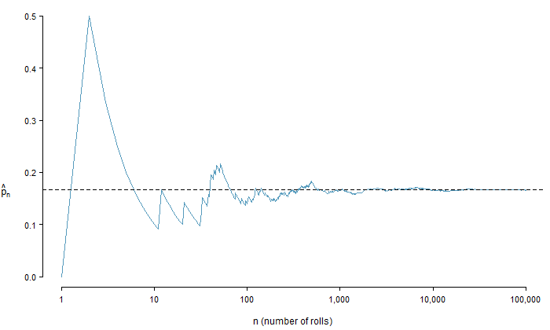
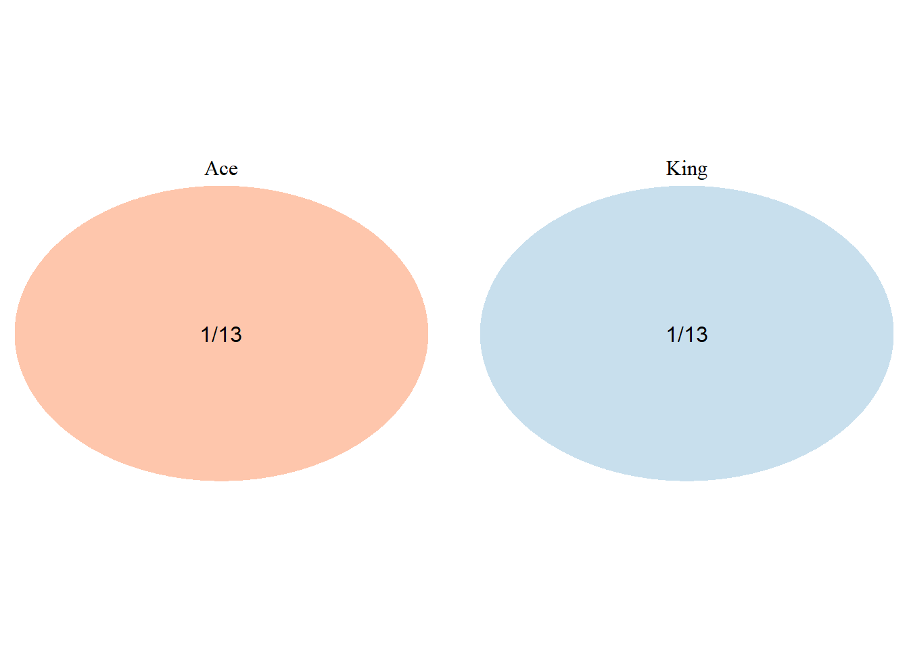
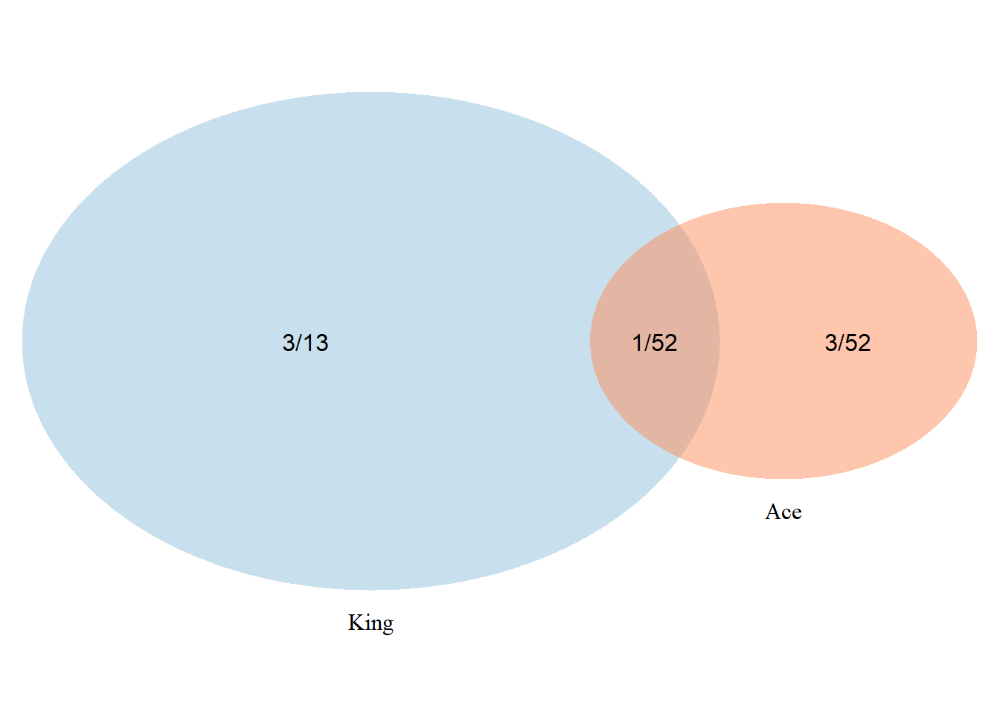
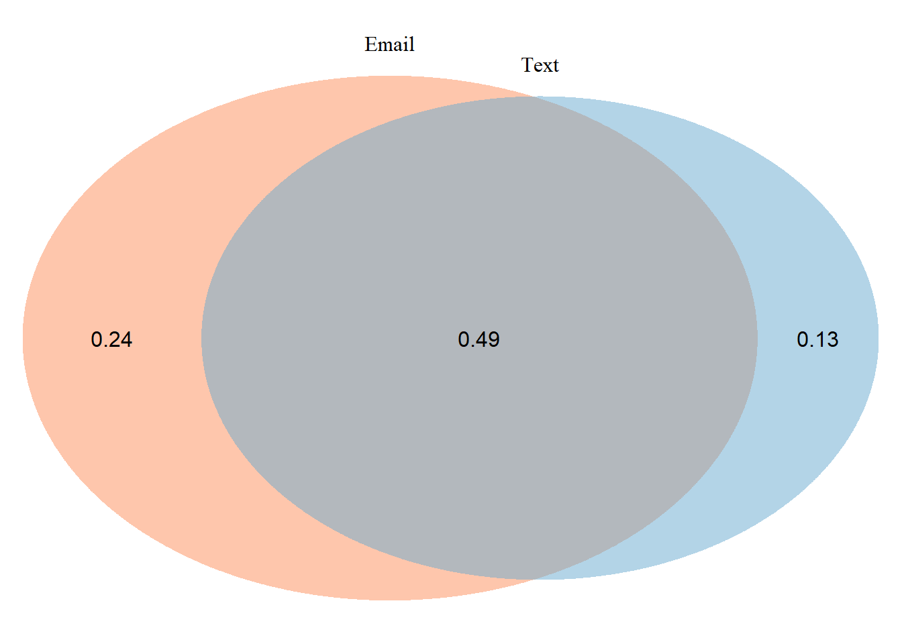
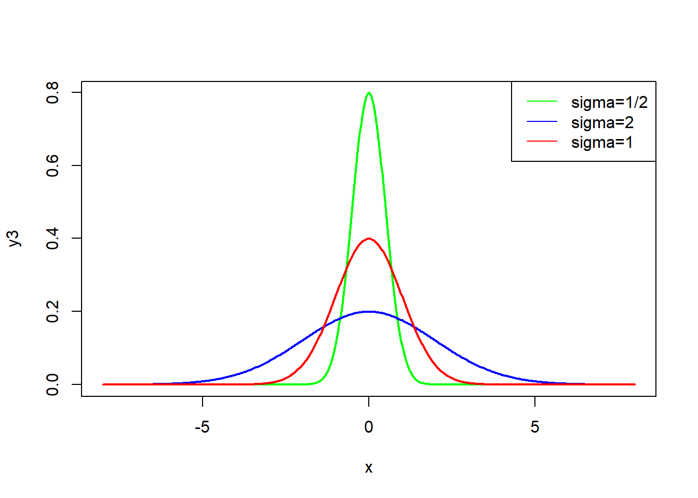
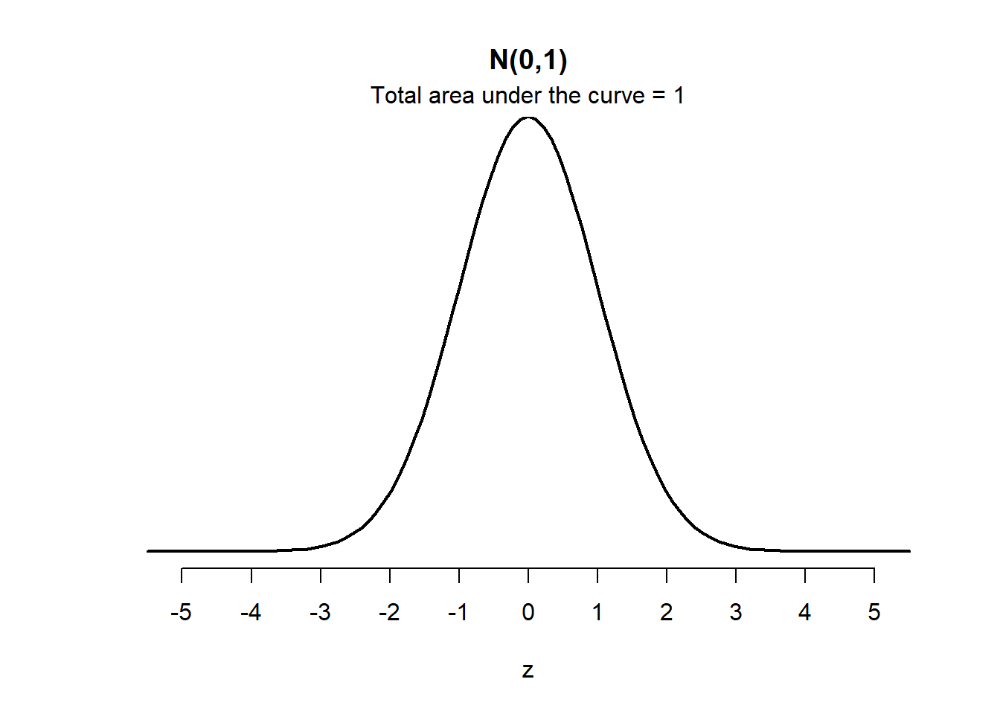
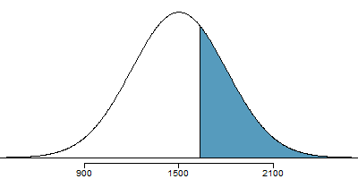
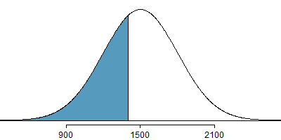
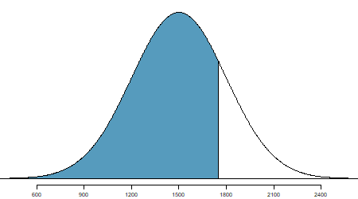

Chapter 5 Random Process and Probabillity
Learning Outcome
| Solve basic probability problems using ratios, proportions, two-way tables and percentages. |
In this chapter, we will extend the concept of relative frequencies to understand and calculate the probability of occurrence of a random event. We will also learn about normal distribution, its properties, and methods to calculate probabilities of random events that are described by this distribution.
5.1 Meaning of Probability
An event is Random if individual outcomes of it are unpredictable, meaning they have no apparent pattern of occurrence, but there is nonetheless a predictable distribution (i.e. the frequencies) of those different outcomes over a large number of repetitions of the event.
The Probability of any outcome of a random event can be defined as the proportion of times the outcome would occur in a very long series of repetitions.
The probability is defined as a proportion, and it always takes values between \(0\) and \(1\) (inclusively). It may also be displayed as a percentage between \(0\%\) and \(100\%\).
- \(0\%: \text{event is impossible}\)
- \(100\%: \text{event is certain}\)
The sample space of a random experiment is the group of all possible outcomes.
The event is some of the outcomes in the sample space, all of them, or none of them.
Theoretical vs. Experimental Probability
The Theoretical probability is the likelihood of occurring of an event. It is simply the ratio of the number of desired outcomes and the number of all possible outcomes.
The experimental probability is an estimate of the likelihood of occurring of an event based on repeated trials.
Law of Large Numbers
Consider: Rolling a 1 of a die
If the sample space of a random experiment consists of \(n\) equally likely outcomes and an event \(E\) consists of \(m\) of those outcomes, then
\[\text {Theorerical Probability} : P(E) = \frac{\text{number of outcomes in the event}(m)}{\text{total number of outcomes}(n)}\]
Let \(\hat{p_n}\) be the proportion of outcomes that are \(1\) after the \(n\) rolls. As the number of rolls \((n)\) increases, \(\hat{p_n}\) (the relative frequency of rolls, or the experimental probability) will converge to the theoretical probability of rolling a \(1,\space p = 1/6.\) The figure shows the convergence for \(100,000\) die rolls.
The tendency of \(\hat{p_n}\) to stabilize around \(p\), i.e. the tendency of the relative frequency to stabilize around the true probability, is described by the Law of Large Numbers.
As more observations are collected, the observed proportion \(\hat{p_n}\) of occurrences with a particular outcome after \(n\) trials converges to the true probability \(p\) of that outcome.
Die Rolls Simulation

The figure shows the fraction of die rolls that are \(1\) at each stage in a simulation. The relative frequency tends to get closer to the probability \(1/6 \approx 0.167\) as the number of rolls increases.
Example: Calculating Probabilities
For a group of \(10\) students in one of the author’s algebra classes, there are \(2\) nursing majors \(\textbf (N)\), \(4\) business majors \(\textbf (B)\), \(1\) architect \(\textbf (A)\) major, and \(3\) undecided \(\textbf (U)\) majors. None of the students are double-majors.
- Find \(P(N)\).
- Construct a frequency and relative frequency table of the students’ majors.
- Find \(P(B), P(A)\), and \(P(U)\).
- Find \(P(\text{philosophy})\).
- Find the probability of randomly selecting a nursing, business, architect, OR undecided major.
- Find \(P(N) + P(B) + P(A) + P(U)\). Why does the result make sense?
A random variable is a numerical measure of an outcome from a random experiment. We often use a capital letter such as X to stand for a random variable.
Let X be the outcome of rolling a six-sided die once. Find the given probability.
1.\(P(X=4)\)
2.\(P(X\le 4)\)
3.\(P(X>4)\)
4.\(P(3 \le X \le 6)\)
5.2 Finding Probabilities
Events are disjoint
Two events or outcomes are called disjoint or mutually exclusive if they cannot both happen in the same trial.
When rolling a die, the outcomes \(1\) and \(2\) are disjoint, and we compute the probability that one of these outcomes will occur by adding their separate probabilities: \[P(1 \text{ or } 2)=P(1)+P(2)=1/6+1/6=1/3\]
What about the probability of rolling a \(1, 2, 3, 4, 5, \ or \ 6\) ?
\[ \begin{array}{ll} P(1 \text{ or } 2 \text{ or } 3 \text{ or } 4 \text{ or } 5 \text{ or }6) = P(1)+P(2)+P(3)+P(4)+P(5)+P(6) \\ =1/6+1/6+1/6+1/6+1/6+1/6 =1 \end{array} \]
It is no surprise that the probability is \(1\), since it is certain that one of the six outcomes must occur.
Addition Rule of Disjoint Outcomes
If \(A_1,...,A_k\) represent \(k\) disjoint outcomes, then the probability that one of them occurs is given by: \[P(A_1\text{ or }A_2 \text{ or ... or }A_k)=P(A_1)+P(A_2)+...+P(A_k)\]
Consider a standard deck of cards.
\[ \text {4 suits} \left\{ \begin{array}{ll} \text{hearts: } \color{red}{\heartsuit} \\ \text{diamonds: } \color{red}{\diamondsuit} \\ \text{clubs: } \spadesuit \\ \text{spades: } \clubsuit \end{array} \right. \] \[\text{13 cards in each suit: } Ace, 2, 3, 4, 5, 6, 7, 8, 9, 10, Jack, Queen, King\] One card is dealt from a well shuffled deck.
\[ \begin{align} P(\text{the card is an ace or a king}) &= P(\text{it's an ace})+P(\text {it's a king}) \\ & = 4/52+4/52 \\ & = 8/52 \\ & = 2/13 \end{align} \]
Venn Diagram | When events are disjoint
\[ \begin{align} P(\text{the card is an ace or a king}) &= P(\text{it's an ace})+P(\text {it's a king}) \\ & = 4/52+4/52 \\ & = 2/13 \end{align} \]

## (polygon[GRID.polygon.244], polygon[GRID.polygon.245], polygon[GRID.polygon.246], polygon[GRID.polygon.247], text[GRID.text.248], text[GRID.text.249], text[GRID.text.250], text[GRID.text.251])Events are not disjoint
\[ \begin{align} & P(\text{the card is an ace or a heart}) \\ &= P(\text{it's an ace})+P(\text {it's a heart})-P(\text{it's an ace & heart}) \\ & = 4/52+13/52 - \underbrace{1/52}_{\text {adjustment made to avoid double-counting of the ace of hearts}} \\ & = 16/52 \\ & = 4/13 \end{align} \]
Venn Diagram - a diagram style to illustrate simple set relationships in probability.
When events are NOT disjoint
\[ \begin{align} & P(\text{the card is an ace or a heart}) \\ & = P(\text{it's an ace})+P(\text {it's a heart})-P(\text{it's an ace AND heart}) \\ & = 4/52+13/52 - 1/52 = 16/52 \end{align} \]

FALSE (polygon[GRID.polygon.252], polygon[GRID.polygon.253], polygon[GRID.polygon.254], polygon[GRID.polygon.255], text[GRID.text.256], text[GRID.text.257], text[GRID.text.258], text[GRID.text.259], text[GRID.text.260])5.2.1 General Addition Rule of Probability
\[ \bbox[yellow,5px] {\color{black}{P(A \space or \space B) = P(A) + P(B) - P(A \space and \space B)}} \] where \(P(A \text{ and } B)\) is the probability that both events occur.
If \(A\) and \(B\) are mutually exclusive, \(P(A \space and \space B) = 0\)
Therefore,
\[ P(A \space or \space B) = P(A) + P(B)\]
Complement Rule | When an event does not occur
The complement of event \(A\) is denoted \(A^c\), and \(A^c\) represents all outcomes not in \(A\). \(A\) and \(A^c\) are mathematically related:
\[ \begin{align} & P(A) + P(A^c) = 1 \\ or, \space & P(A^c) = 1 - P(A) \end{align} \]
Example: if an event has chance \(40\%\), then the chance that it doesn’t happen is \(60\%\).
Venn Diagram | Exercise
\[ \begin{align} P(email) &=0.73 \\ P(text) &= 0.62 \\ P(\text {email & text}) &= 0.49 \\ P(\text {only email}) &= 0.73 - 0.49 = 0.24 \\ P(\text{only text}) &= 0.62 - 0.49 = 0.13 \\ P(\text{neither email nor text}) &= 1 - (0.24 + 0.49 + 0.13) = 0.14 \end{align} \]

(polygon[GRID.polygon.261], polygon[GRID.polygon.262], polygon[GRID.polygon.263], polygon[GRID.polygon.264], text[GRID.text.265], text[GRID.text.266], text[GRID.text.267], text[GRID.text.268], text[GRID.text.269]) 5.2.2 Multiplication Rule | for independent processes
If \(A\) and \(B\) represent events from two different and independent processes, then the probability that both \(A\) and \(B\) occur can be calculated as the product of their seprarate probabilities:
\[P(A \text{ and } B) = P(A) \times P(B)\]
Similarly, if there are \(k\) events \(A_1,...,A_k\) from \(k\) independent processes, then the probability they all occur is
\[ \bbox[yellow,5px] { \color{black} {P(A_1\text{ and }A_2 \text{ and ... and }A_k)=P(A_1)\times P(A_2)\times...\times P(A_k)} } \]
Example 1: If a card is randomly drawn from a well-shuffled deck, what is the probability that it is the ace of hearts? [Note: Ace and Hearts are two independent events.]
\[ \begin{align} P(Ace \text{ and } Hearts) &= P(Ace) \times P(Hearts) \\ &= (4/52) \times (13/52) = 1/52 \end{align} \]
Example 2:
About \(9\%\) of people are left-handed. Suppose \(5\) people are selected at random from the US population.
(a) What is the probability that all are right-handed?
(b) What is the probability that all are left-handed?
(c) What is the probability that not all of them are right-handed?
\[ \begin{align} &(a) \space P\text{(All are RH)} = (1-0.09)^5 = 0.624 \\ &(b) \space P\text{(All are LH)} = (0.09)^5 = 0.0000059 \\ &(c) \space P\text{(not all RH)} = 1- P(\text {all RH}) = 1-0.624 = 0.376 \end{align} \]
5.2.3 General Multiplication Rule
If \(A\) and \(B\) represent two outcomes or events, then
\[ \bbox[yellow,5px] {\color{black}{P(A \space and \space B) = P(A|B) \times P(B)}} \]
Conditional Probability
The conditional probability of the outcome of interest \(A\) given condition \(B\) is computed as the following:
\[P(A|B) = \frac{P(A \text{ and } B)}{P(B)}\]
Exercise: Calculating Probabilities from a Contingency Table:
Table: College enrollment and parents’ educational attainment
\[ \begin{array} {l|cc|r} & \text{parents: degree} & \text{parents: no degree} & \text{total} \\ \hline \text {teen: college} & 231 & 214 & 445 \\ \text {teen: no college} & 49 & 298 & 347 \\ \hline \text {total} & 280 & 512 & 792 \end{array} \]
a) Finding Marginal and Joint Probabilities:
If a probability is based on a single variable, it is a marginal probability. The probability of outcomes for two or more variables or processes is called a joint probability.
Example: College enrollment and parents’ educational attainment
\[ \begin{array} {l|cc|c} & \text{parents: degree} & \text{parents: no degree} & \text{marginal} \\ \hline \text {teen: college} & \color{red}{0.29} & \color{red}{0.27} & \color{blue}{0.56} \\ \text {teen: no college} & \color{red}{0.06} & \color{red}{0.38} & \color{blue}{0.44} \\ \hline \text {marginal} & \color{blue}{0.35} & \color{blue}{0.65} & 1.00 \end{array} \]
\[ \begin{align} &\color{blue}{\text{Marginal Probability: }} P(\text{teen: college})=\frac{445}{792}=0.56 \\ &\color{red}{\text{Joint Probability: }} P(\text {teen: college and parents: no degree})=\frac{214}{792}=0.27 \end{align} \]
b) Finding Conditional Probability:
Example: College enrollment and parents’ educational attainment
\[ \begin{array} {l|cc|r} & \text{parents: degree} & \text{parents: no degree} & \text{total} \\ \hline \text {teen: college} & 231 & 214 & 445 \\ \text {teen: no college} & 49 & 298 & 347 \\ \hline \text {total} & 280 & 512 & 792 \end{array} \]
\[ \begin{align} P(\text {teen college | parents degree}) &= \frac{231/792}{280/792} = 0.825 \\ P(\text {teen college | parents no degree}) &= \frac{214/792}{512/792} = 0.418 \\ P(\text {teen no college | parents degree}) &= \frac{49/792}{280/792} = 0.175 \\ P(\text {teen no college | parents no degree}) &= \frac{298/792}{512/792} = 0.582 \end{align} \]
c) Condition of Independence
Verify whether one of the following equations holds:
\[ \begin{align} P(A|B) &= P(A) \tag 1 \\ P(A \space and \space B) &=P (A) \times P(B) \tag 2 \end{align} \]
Check if the equality holds in the following equation:
\[ \begin{align} P(\text{teen college | parent degree})&\stackrel{?}{=} P(\text {teen college}) \\ 0.825 &\ne 0.560 \end{align} \] Because both sides are not equal, teenager college attendance and parent degree are not independent.
Two events are mutually exclusive
If \(A\) and \(B\) are mutually exclusive events, then they cannot occur at the same time. If asked to determine if events \(A\) and \(B\) are mutually exclusive, verify one of the following equations holds:
\[ \begin{align} P(\text{A and B})&= 0 \tag 1 \\ P(\text{A or B}) &= P(A)+P(B) \tag 2 \end{align} \]
If the equation that is checked holds true, \(A\) and \(B\) are mutually exclusive. If the equation does not hold, then \(A\) and \(B\) are not mutually exclusive.
At Least One
A poker hand (5 cards) is dealt from a well shuffled deck. What is the chance that there is at least one ace in the hand?
\[ \begin{align} &P(\text{at least one ace}) \\ &=1-P(\text{no aces}) \\ &=1-(48/52) \times (47/51) \times (46/50) \times (45/49) \times (44/48) \\ &=34.11\% \end{align} \]
5.3 Finding Probabilities from a Normal Distribution
Properties of a Normal Curve
A normal curve is unimodal and symmetric.
The mean is equal to the median.
Both are the center of the curve.

Empirical Rule
Probabilities for falling \(1,\) \(2,\) and \(3\) standard deviations of the mean in a normal distribution.

Linear Transformation of Normal Curve | Standardizing with Z-Scores
Consider a normally distributed random variable \(x\) with mean \(\mu\) and sd \(\sigma\): \(x \tilde \space N(\mu, \sigma)\)
Two-step linear transformation of \(x\)
- subtract \(\mu\) from \(x\)
- divide \((x-\mu)\) by \(\sigma\)
\[\bbox[yellow,5px]{\color{black}{\text{standard normal deviate: } z = \frac {x-\mu}{\sigma}}}\]
The Z-score of an observation is defined as the number of standard deviations it falls above or below the mean. If the observation is one standard deviation above the mean, its Z-score is 1. If it is 1.5 standard deviations below the mean, then its Z-score is -1.5.
Linear Transformation | Normal Curve to Standard Normal Curve
 \[ \bbox[yellow,5px] { \color{black}{{\text {Density at z}} = \frac {1}{\sqrt {2\pi}}\exp{-\frac{1}{2}z^2}, -\infty<z<+\infty} } \]
Example: Compute and Interpret a \(z\)-Score
The 2014 draft picks for NBA basketball teams have heights that are approximately normally distributed with mean 79.1 inches and standard deviation 3.0 inches (Source: nbadraft.net). Shabazz Napier was the shortest 2014 draft pick with a height of 72 inches. Find the z-score for 72 inches. What does it mean?
\[ z = \frac {x - \mu}{\sigma} \\ z = \frac {72 - 79.1}{3} \\ z = - 2.37 \]
The z-score is –2.37, which means that Napier’s height is 2.37 standard deviations less than the mean.
Empirical Rules in terms of \(z\)-scores
Because the z-score of an observation is the number of standard deviations that the observation is from the mean, we can restate the Empirical Rule in terms of \(z\)-scores. So, if a distribution is normally distributed, then
\(68\%\) of its z-scores lie between –1 and 1
\(95\%\) of its z-scores lie between –2 and 2
\(99.7\%\) of its z-scores lie between –3 and 3
Normal Probability Examples | z-score to percentile
Cumulative SAT scores are approximated by a normal model with \(\mu = 1500 \text { and } \sigma = 300\).
What is the probability that a randomly selected SAT taker scores at least 1630 on the SAT?

\(z = \frac{x-\mu}{\sigma}=\frac{1630-1500}{300}=\frac{130}{300}=0.43\)
\(P(z\ge0.43)=0.3336\)
The probability that a randomly selected score is at least 1630 on the SAT is 33%.
Exercise
People’s IQ scores are normally distributed with mean \(\textbf {100}\) points and standard deviation \(\textbf {15}\) points. Let X be the IQ (in points) of a randomly selected person. Find the probability that a randomly selected person has an IQ
less than \(\textbf {78}\) points.
greater than \(\textbf {117}\) points.
Normal Probability Examples | z-score to percentile
Edward earned a 1400 on his SAT. What is his percentile?

\(z = \frac{x-\mu}{\sigma}=\frac{1400-1500}{300}=\frac{100}{300}=-0.33\)
\(P(z\le-0.33)=0.3707\)
Edward is at the 37th percentile.
Normal Probability Examples | percentile to z-score
Carlos believes he can get into his preferred college if he scores at least in the 80th percentile on the SAT. What score should he aim for?

At \(80th\) percentile, \(z = 0.84\)
\[ \begin{align} z & = \frac{x-\mu}{\sigma} \\ 0.84 & = \frac{x-1500}{300} \\ 0.84 \times 300 + 1500 & = x \\ x & = 1752 \end{align} \]
The 80th percentile on the SAT corresponds to a score of 1752.
Practice Problems
The scores on the Wechsler IQ test are normally distributed with mean 100 points and standard deviation 15 points. Film director Quentin Tarantino is reported to have a z-score of z = 4 (Source: Chicago Tribune). What is his IQ score?
A professor gives a test to her calculus students. The scores are approximately normally distributed with mean 75 points and standard deviation 9 points. The professor decides to give As to approximately 10% of the students but not less than 10%. Find the cutoff score for an A.
Maria and Roberto took tests on probability in two different sections of prestatistics. Maria scored 91 points on a test with mean 77 points and standard deviation 6 points. Roberto scored 80 points on a test with mean 68 points and standard deviation 4 points. The test scores on each test are approximately normally distributed.
- Find the z-score for Maria’s test score. What does it mean in this situation?
- Find the z-score for Roberto’s test score. What does it mean in this situation?
- Assuming a typical student in one class knows the material as well as a typical student in the other class, determine whether Maria did relatively better than Roberto.
Assuming the sodium levels per serving of the low-salt chips are approximately normally distributed with mean 85 mg and standard deviation 5 mg, find the probability that a randomly selected bag would have at least 104 mg of sodium per serving.
What is the probability that a randomly selected data point from a normal distribution can be classified as an outlier?
\[ Q_3 + 1.5 \times IQR \le \text {outlier} \\ \text {outlier} \le Q_1 - 1.5 \times IQR \]